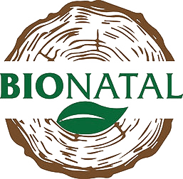

May 2025–Present
ENTACT LLC
Field Engineer directing personnel and equipment operations, quality, project controls, and team development on complex civil and environmental work.
Lead Field Engineer · Clifty CreekLead Field Engineer and Construction Quality Control Manager for a three-year, $60 million landfill and pond-closure project.
Field Engineer · Venture Global CP2Tracked an $86 million soil-solidification scope and built workflows that helped secure another 700,000 cubic yards of work.
Team leadershipLead four field engineers and coordinate field operations across 6–15 machines as project scopes require.
Field automationBuilt tools for reporting, quantity and equipment tracking, time entry, survey, and CAD used by about 10 people across project teams.
Jun 2024–Apr 2025
Lockwood, Andrews & Newnam
Subsurface Utility Engineer who delivered 17 client packages while coordinating investigations across more than 20 TxDOT roadway corridors.
TxDOT I-35 · GeorgetownIdentified and documented more than 500 utility conflicts and produced the conflict matrix and project drawing used in relocation coordination.
Standards and mentorshipTrained two new engineers to work independently within two months and developed standards adopted by the four-person department.
2023–Present · Part-time

BioNatal LLCAutomation Engineer building Power Apps, Power Automate, and custom systems that save about 20 hours per week for a three-person team.
Operational systemsBuilt a product and inventory app that replaced a $300-per-month Katana MRP subscription and an email-feedback pipeline that groups responses into actionable themes.
Marketing automationBuilt an AI campaign-image generator that replaced a full-time photography and editing subcontractor.
Community coaching
Track & Field Coach
Coached track and field at St. Vincent de Paul Catholic School for students ranging from kindergarten through eighth grade.
Youth track & fieldIntroduced age-appropriate fundamentals through structured practices, technical instruction, and repeatable drills.
K–8 athlete developmentHelped young athletes build confidence, consistency, accountability, and readiness for competition.
2020–May 2025
 Rice University
Rice University
B.S. Mechanical Engineering with a Mechanics/Dynamics specialization while competing for five seasons in NCAA Division I Track & Field.
Mechanical EngineeringBuilt a rigorous foundation in mechanics, dynamics, analytical problem-solving, design, and systems thinking.
Rice Track & FieldContributed 24 conference championship points across shot put and discus while earning academic recognition.